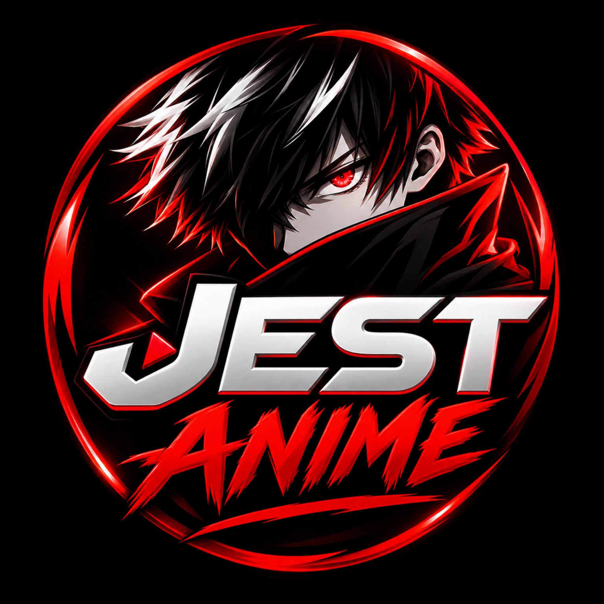

◈
Anime Keşfet
Anime içeriklerini keşfet ve detaylarını incele.

Anime VizyonAnime içeriklerini keşfet ve detaylarını incele.
Farklı anime türlerini kategoriler üzerinden keşfet.
Favori içeriklerini kendi listende topla.
Mobil cihazlara uygun sade ve modern kullanım deneyimi.